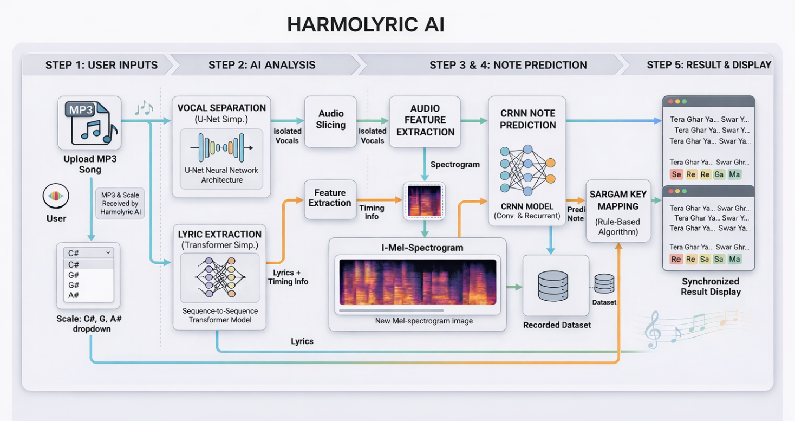
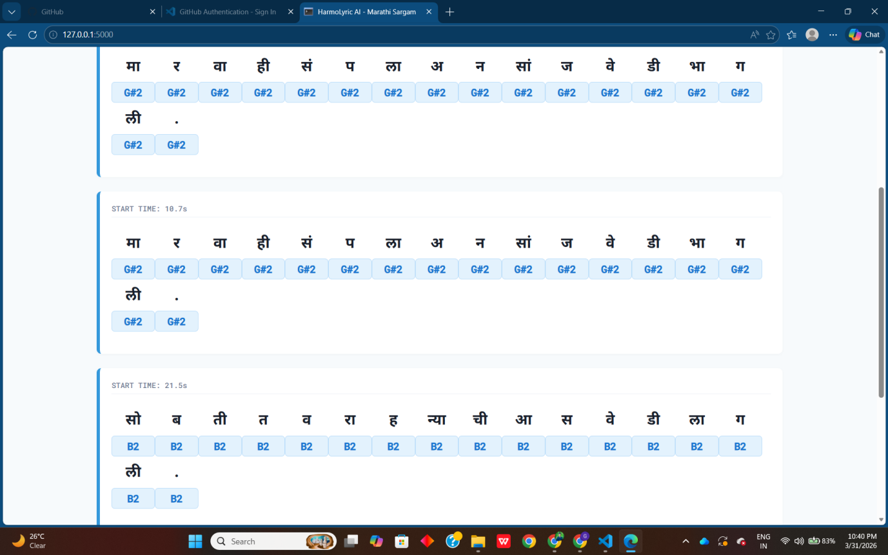
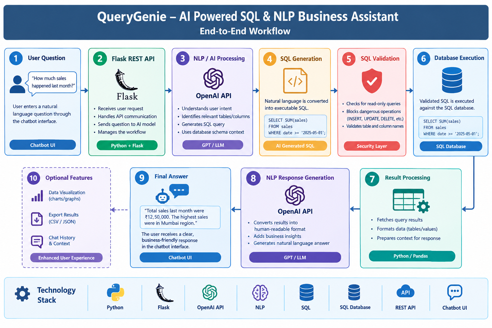
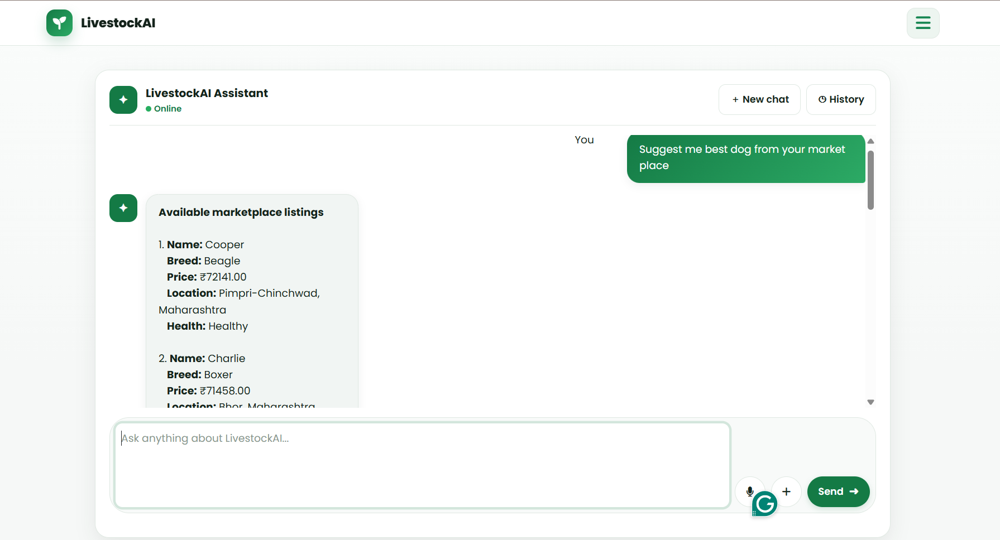
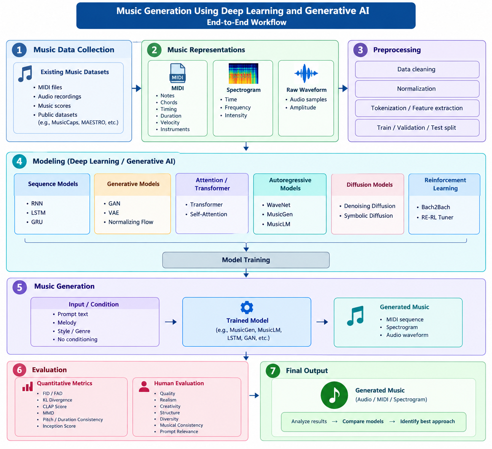
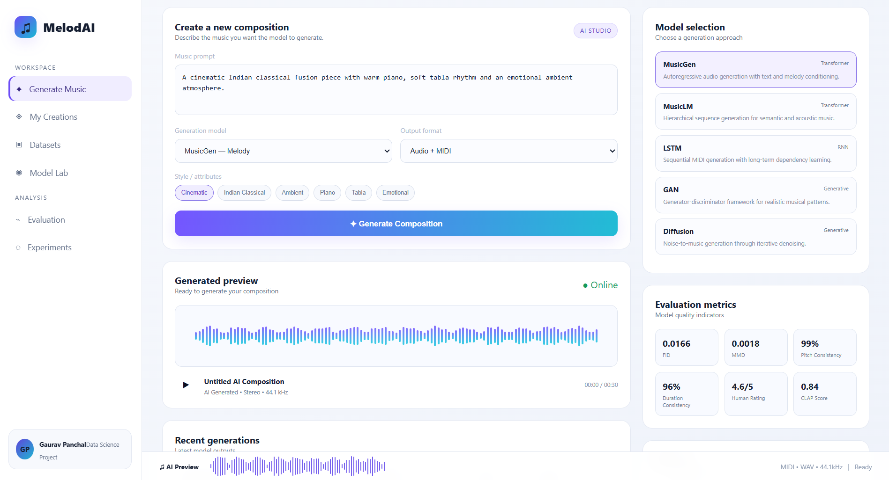
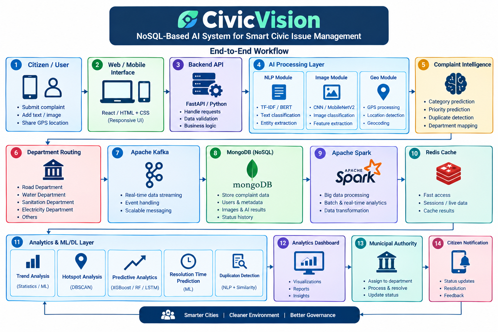
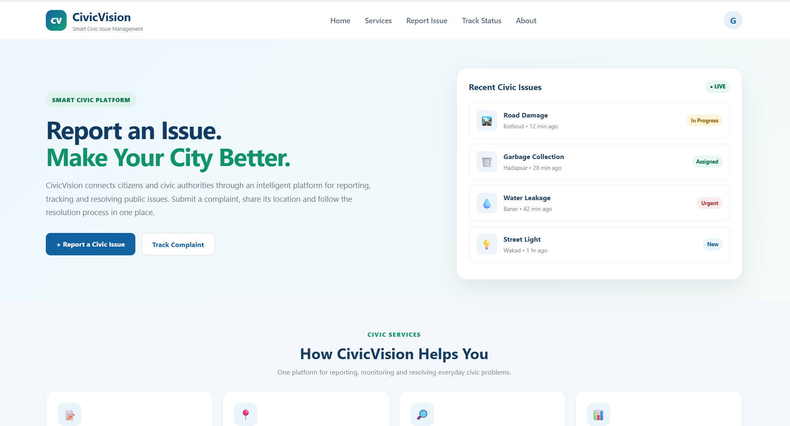
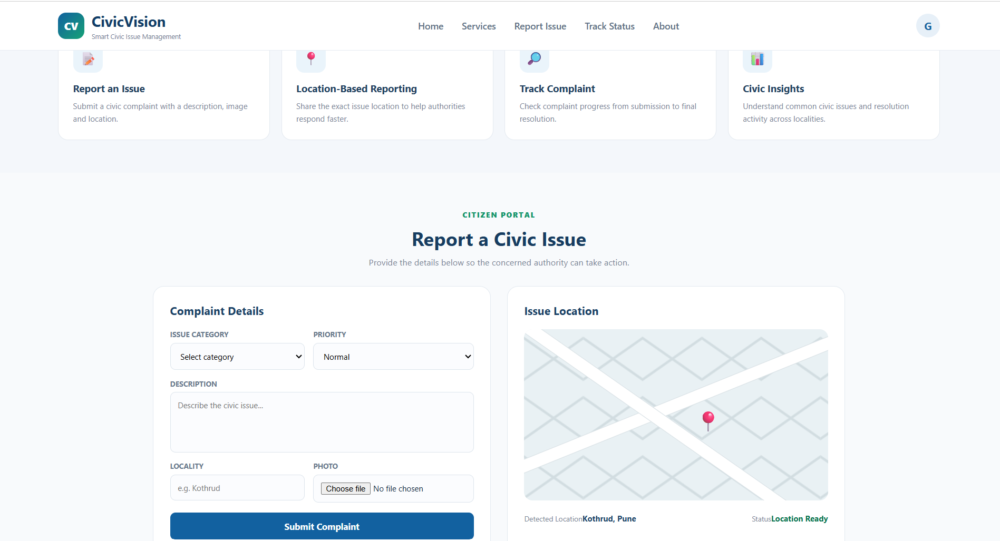

The challenge
Traditional transcription asks a musician to listen repeatedly, identify Marathi lyrics, recognize overlapping harmonium notes, and align both by hand. HarmoLyric AI brings those steps into one repeatable workflow.
Project overview
Featured case study
A multi-stage audio intelligence pipeline for separating vocals, recognizing Devanagari lyrics, detecting polyphonic harmonium notes, and presenting the synchronized result.
Traditional transcription asks a musician to listen repeatedly, identify Marathi lyrics, recognize overlapping harmonium notes, and align both by hand. HarmoLyric AI brings those steps into one repeatable workflow.
Audio is standardized to 16 kHz mono, separated with Spleeter, transcribed with Marathi Whisper timestamps, and transformed with Librosa features. A CNN + Bi-LSTM model then performs multi-label pitch-class detection.
Detected Western pitch classes are mapped to Sargam from the user's selected Sa, smoothed into meaningful events, synchronized with lyric timestamps, and exported as JSON or CSV for the dashboard.

Results & accuracy
The custom harmonium dataset contains more than 21,000 samples spanning isolated notes, triads, and multiple octaves. The balanced 12-class model regularly reached over 95% confidence on clean single-note inputs, with a 50% activation threshold for multi-label predictions.

How it was implemented
The system is organized as a queue-based Flask application. Each stage produces a structured output that becomes the input for the next stage, keeping audio processing, machine learning, and presentation logic separate.
Flask receives the audio file and the user's base note, Sa. The application validates the extension, stores the upload, and creates a job record instead of blocking the browser.
Flask · HTML5 · Jinja2Redis stores the job state and RQ sends the processing task to a background worker. This keeps Spleeter, Whisper, and model inference outside the normal request-response cycle.
Redis · RQ · PythonPydub converts WAV, MP3, M4A, and FLAC inputs into normalized 16 kHz mono WAV audio so every downstream model receives a predictable signal.
Pydub · WAV · 16 kHz monoSpleeter splits the mixed recording into vocal and accompaniment stems. The vocal stem is reserved for Marathi speech recognition, while the harmonium stem is analyzed for musical notes.
Spleeter · source separationWhisper processes the vocal stem and returns Devanagari text with start and end timestamps. Grapheme-aware text handling preserves Marathi matras and conjunct characters for correct display.
OpenAI Whisper · Marathi ASRLibrosa slices the harmonium stem using lyric intervals and extracts mel-spectrogram, chromagram, and pitch-cents features. These are resized and stacked into a three-channel tensor for the model.
Librosa · NumPy · SpecStackerThe CRNN combines CNN layers for spectral patterns with a Bi-LSTM for time context. Sigmoid outputs allow several notes to be active together; thresholding and event merging remove brief prediction flicker.
TensorFlow / Keras · CNN · Bi-LSTMDetected Western pitch classes are converted to Sargam using semitone distance from the selected Sa. Lyrics, notes, and timestamps are joined into JSON, converted to CSV, and rendered in the dashboard.
Sargam mapping · JSON · CSV · Jinja2Methodology
Mel-spectrograms describe frequency energy over time, chromagrams capture pitch-class energy, and cents values retain finer pitch movement.
Harmonium can produce simultaneous notes, so sigmoid outputs are used instead of softmax. A threshold activates every pitch class that is present.
Whisper timestamps define lyric windows, while note events are merged and aligned to those same intervals for a readable transcription.
More than 21,000 samples are balanced across 12 pitch classes and expanded with pitch shifting, time stretching, and controlled noise.
Results & accuracy
HarmoLyric AI was evaluated using a custom harmonium dataset containing more than 21,000 audio samples, including isolated notes and polyphonic triads across different harmonium octaves.
The 12 chromatic pitch classes were balanced to approximately 8.33% each in the final distribution.
The correct pitch class regularly produced more than 0.95 confidence on clean, isolated notes.
A 0.50 confidence threshold determined whether a pitch class was active.
450 detections
380 detections
210 detections
150 detections
120 detections
45 detections
Because the model uses multi-label classification, it detected simultaneous notes such as the three notes of a C-Major triad instead of selecting only the loudest note.
Temporal post-processing used merge_and_threshold_events to merge consecutive identical predictions and remove events shorter than approximately 0.12 seconds. This reduced frame-level flickering and produced smoother note sequences.
Spleeter followed by Whisper gave more reliable Marathi lyric transcription than processing the mixed recording directly. Harmonium leakage into the vocal stem reduced Whisper confidence and could produce incorrect Devanagari text.
The report notes a slight reduction in confidence for highly compressed, low-bitrate MP3 files.
Featured case study
QueryGenie is an AI-powered SQL and NLP assistant that lets business users query relational data in natural language while the system handles schema context, SQL generation, validation, execution, and explanation.
Managers often need business answers but should not have to learn table names, joins, aggregation functions, or SQL syntax to find them.
A Flask REST API sends the question and database schema context to an AI model, validates the generated read-only SQL, and executes it against the real database.
Query results are processed and turned into a clear business explanation, so the user receives an answer grounded in database data rather than an unsupported AI guess.

How it was implemented
Each stage keeps the user interface, AI reasoning, database access, and final response separate so the assistant remains understandable and maintainable.
The chatbot accepts everyday business questions such as total sales, top products, revenue by region, or orders during a date range.
Chatbot UI · Natural languageThe frontend sends the question to a Flask REST endpoint. The backend becomes the controlled communication layer between the UI, AI model, and database.
Python · Flask · REST APIThe prompt includes relevant tables and columns, such as product, region, sales, quantity, and order date, so the model can connect user language to real database fields.
Schema context · Prompt engineeringThe model interprets operations such as SUM, COUNT, AVG, MAX, filtering, grouping, sorting, and date analysis, then produces a query for the requested insight.
OpenAI API · NLP-to-SQLThe generated query is checked against the application's rules and restricted to permitted read-only operations such as SELECT, preventing destructive commands such as DELETE, DROP, or UPDATE.
SQL validation · Read-only checksThe approved SQL runs against the SQL database. The backend converts scalar or tabular results into structured data for the response layer.
SQL · Relational databaseThe result is passed to the response-generation layer, which turns values such as 1250000 or grouped regional totals into a concise human-readable answer.
Natural language generationThe Flask API returns a JSON response and the chatbot presents the explanation to the user without exposing unnecessary database or SQL complexity.
JSON · Chatbot interfaceMethodology
The system identifies the requested entity, metric, operation, filters, ranking, and time period from the user's wording.
Schema context connects natural-language terms to actual tables and columns, keeping SQL generation tied to the available data model.
Validation sits between the AI model and the database so generated statements can be restricted to permitted read-only operations.
Actual query results are converted into a business explanation, following the flow: Ask, understand, generate, validate, execute, explain.

Technology implementation
I built QueryGenie as a layered application: the chatbot collects the question, Flask controls the request, the AI model translates intent into SQL, the database supplies the factual result, and the response layer explains it in business language.
Python contains the application logic. Flask exposes the REST API, receives the user's question, coordinates the AI and database calls, handles errors, and returns the final JSON response.
Python · Flask · REST APIThe frontend provides a conversational input surface where a manager can ask questions in everyday language. It sends the request to the backend and renders the returned business explanation.
HTML5 · CSS · Chatbot UIThe AI layer interprets intent, identifies metrics and filters, understands operations such as SUM or COUNT, and generates SQL using the supplied database schema context.
OpenAI API · NLP · Prompt engineeringThe database stores the business records. QueryGenie gives the model table and column context, then executes approved queries against the actual data instead of asking the model to guess an answer.
SQL · Relational database · Schema groundingA validation step restricts generated statements to permitted read-only operations before execution. Result processing then converts scalar or tabular output into a clear natural-language response.
SQL safety · JSON · Natural language generationResearch case study
This project is a systematic review of music-generation research, not one single application. It compares music representations, datasets, model families, generation tasks, and evaluation methods across multiple studies.
How can deep learning learn musical structure and generate new melodies, performances, audio, or multi-track compositions from existing music?
The review studies MIDI, spectrogram, and raw-waveform inputs alongside RNNs, LSTMs, GRUs, GANs, VAEs, Transformers, diffusion, and reinforcement learning.
MIDI is a strong structured representation, while MIDI + LSTM, GAN approaches, MusicGen, MusicLM, and symbolic diffusion each perform well for different generation goals.

How the research is organized
The review compares branches of a common pipeline rather than claiming one universal system. Each study chooses a representation and model based on the generation task.
MIDI stores notes, pitch, timing, duration, velocity, instruments, and chords. Spectrograms represent time, frequency, and intensity, while raw waveforms preserve the audio signal directly.
MIDI · Spectrogram · Raw waveformThe selected representation is converted into numerical sequences, image-like spectrograms, or audio tokens that a model can learn from.
MIDI processing · FFT · Spectrogram processingRNN, LSTM, and GRU models learn temporal relationships. Transformers use self-attention to connect distant positions and support longer musical context.
RNN · LSTM · GRU · TransformerGANs learn through generator-discriminator competition, VAEs learn a controllable latent space, normalizing flows transform probability distributions, and diffusion models learn denoising.
GAN · VAE · Flow · DiffusionAutoregressive systems generate one element at a time. WaveNet works with raw audio, while MusicGen and MusicLM use language-model-style conditioning for text, melody, or semantic and acoustic tokens.
WaveNet · MusicGen · MusicLM · EnCodecGenerated music is compared using distribution metrics, pitch and duration consistency, prompt relevance, musical structure, creativity, diversity, and human listener ratings.
FID · FAD · KL · CLAP · MMD · Human evaluationTechnologies and methodologies
MIDI is compact and preserves musical structure, making it suitable for sequence models such as LSTM and symbolic diffusion systems.
Spectrogram and raw-waveform approaches study how models can generate playable audio, including SpecGAN and WaveGAN comparisons.
MusicGen and MusicLM study text-conditioned, melody-conditioned, and hierarchical token-based generation.
Bach2Bach and RE-RL Tuner use reward-based learning to encourage musical behavior, structure, and coherence.
The reviewed studies use datasets including MagnaTagATune, YouTube Piano, MusicCaps, MAESTRO, VoxCeleb2, FreeSound, Looperman, pop MIDI, and Bach music.
There is no single accuracy score for generative music. FID, FAD, KL, CLAP, Inception Score, MMD, pitch consistency, duration consistency, and human ratings measure different properties.
Reported results
The review compares results within their original studies. These values should not be treated as one overall accuracy for the entire project.
Pitch consistency: 99%. Duration consistency: 96% unconditional and 97% for infilling. Reported FID: 0.0166. Reported MMD: 0.0018.
Reported Inception Score: 4.67 ± 0.01. Human recognition: 58%. Human quality rating: 2.3/5.
Reported Inception Score: 3.71. Human recognition: 66%. Human quality rating: 1.9/5.
Reported human rating: approximately 3.58/5.
Reported as strong among compared baselines for KL divergence and CLAP, and slightly worse than Noise2Music on FAD.
Different studies use different metrics and datasets, so direct comparison is difficult. Human evaluation remains important for quality and creativity.

Results & accuracy methodology
Music generation is a generative task, so this research does not use one classification-style accuracy percentage. Each study evaluates a different property of the generated music and should be interpreted within its original dataset, task, and metric.
FID, FAD, KL divergence, and MMD compare generated and real-data distributions. Lower values generally indicate that the generated distribution is closer to the reference data.
Pitch consistency checks whether generated pitches follow expected behavior. Duration consistency checks whether note lengths remain musically coherent.
CLAP measures alignment between generated audio and a text prompt. Inception Score estimates sample quality and diversity, although the review notes limits when applying image-oriented metrics to music.
Listeners rate quality, realism, creativity, structure, diversity, musical consistency, or prompt relevance, often on a 1-to-5 scale.
Pitch consistency reached 99% for unconditional generation and 97% for infilling. Duration consistency reached 96% unconditional and 97% for infilling. Reported FID was 0.0166 and MMD was 0.0018.
Reported Inception Score was 4.67 ± 0.01, human recognition was 58%, and human quality was 2.3/5.
Reported Inception Score was 3.71, human recognition was 66%, and human quality was 1.9/5.
Reported human rating was approximately 3.58/5, showing the importance of listener evaluation for generated music.
The review reports strong results among compared baselines for KL divergence and CLAP, with slightly weaker FAD than Noise2Music.
The correct conclusion is that there is no single accuracy value. Results depend on the model, representation, dataset, generation task, metric, and human evaluation protocol.
Featured case study
CivicVision is a proposed multimodal AI and civic analytics platform for managing public complaints. Citizens submit text, images, and location data; the system classifies the issue, prioritizes it, detects duplicates, routes it to a department, and turns the growing complaint stream into actionable city analytics.
Traditional complaint systems store submissions but leave classification, routing, duplicate detection, and city-level pattern discovery largely to manual processes.
CivicVision combines NLP for complaint text, MobileNetV2 transfer learning for images, coordinates for geographic context, and NoSQL documents for flexible complaint records.
Kafka and Spark extend the platform from complaint management into streaming, department analysis, hotspot detection, resolution prediction, and future complaint forecasting.

How it was implemented
The system is organized as a multimodal event pipeline. Each layer produces structured information that supports the next decision while keeping storage, AI inference, streaming, analytics, and presentation responsibilities separate.
A citizen submits a description, an optional image, GPS coordinates or locality, and basic complaint metadata through the web or mobile interface.
React · HTML5 · JavaScript · FastAPIText preprocessing cleans the description and converts it into features. TF-IDF with Logistic Regression, SVM, Naive Bayes, or Random Forest can classify categories such as garbage, road damage, water, electricity, drainage, traffic, and street lights.
NLP · TF-IDF · Scikit-learnThe image is resized, normalized, and augmented before a CNN or MobileNetV2 model predicts visual classes such as garbage, road damage, flooding, water leakage, drainage, or street-light problems.
TensorFlow / Keras · CNN · MobileNetV2 · Transfer learningText category, image category, location, severity keywords, affected people, and prior complaints are combined to assign priority and recommend the responsible municipal department.
Feature fusion · Random Forest · XGBoostTF-IDF cosine similarity is combined with category and geographic distance. A high similarity score can flag reports about the same civic incident instead of creating unnecessary duplicate work.
Cosine similarity · Geospatial matchingMongoDB stores the description, image reference, user, coordinates, AI predictions, confidence, status, timestamps, comments, and resolution history in a flexible document. Neo4j can model relationships between citizens, complaints, localities, categories, and departments.
MongoDB · MongoDB Atlas · Neo4jKafka topics can carry complaints, images, status changes, predictions, and notifications. Spark or PySpark processes larger datasets for category trends, department performance, monthly growth, and peak complaint periods.
Apache Kafka · Apache Spark · PySparkDBSCAN identifies geographic hotspots, Random Forest or XGBoost predicts priority and resolution time, and LSTM can forecast future complaint volume. The authority dashboard presents status, trends, high-risk areas, and predictions.
DBSCAN · XGBoost · LSTM · Plotly · Power BITechnologies and methodology
Text, image, and location are used together so the system can understand both what the citizen reports and where the issue occurs.
MongoDB handles changing complaint fields naturally, while Neo4j is an optional graph layer for relationships among localities, departments, categories, and repeated issues.
Kafka provides an event layer for near-real-time processing, while Spark supports distributed analytics across large complaint histories.
Text and image classifiers are trained and compared using labeled civic examples. Priority and resolution-time models use complaint and operational features.
DBSCAN groups nearby complaint coordinates to reveal hotspots such as localities with unusually high issue density.
Historical complaint counts and resolution records support forecasts that help authorities respond before recurring problems grow.
Python, FastAPI, Uvicorn, Docker, Git, MongoDB Atlas, Jupyter, Streamlit, Plotly, and Power BI support development, deployment, analysis, and reporting.
An LLM with retrieval-augmented context can explain complaint status and service rules, but it remains an optional module rather than the core research contribution.
Results and accuracy
CivicVision's own results must be measured after training its selected dataset. The available reference paper reports image-classification performance for 5,494 images across four categories; those results are reference benchmarks, not CivicVision results.
The paper used 5,494 images across Damaged Road, Flood, Trash, and Homeless People, with 85% used for training and the remaining images for testing.
The reported test counts were 813 correct classifications out of 826 test images, giving a calculated overall accuracy of approximately 98.43%.
Damaged Road: 99.38%. Flood: 97.75%. Trash: 98.35%. Homeless People: 98.36%.
Methodology for CivicVision evaluation: split collected data into training, validation, and test sets; compare TF-IDF text models; compare CNN and MobileNetV2 image models; report accuracy, precision, recall, F1-score, confusion matrices, and ROC-AUC where appropriate.
For resolution-time prediction, report MAE and RMSE. For hotspot clustering, report cluster quality such as silhouette score. For complaint forecasting, report time-series error. These measurements must be calculated from CivicVision's own labeled data rather than copied from the reference paper.
The key research result is therefore a comparative evaluation across text classification, image classification, priority prediction, resolution prediction, duplicate detection, hotspot analysis, and forecasting, not one unsupported accuracy number.

